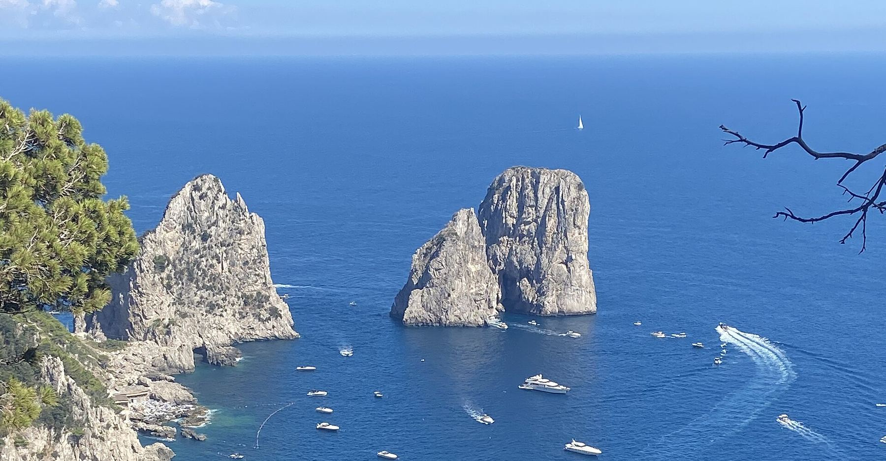
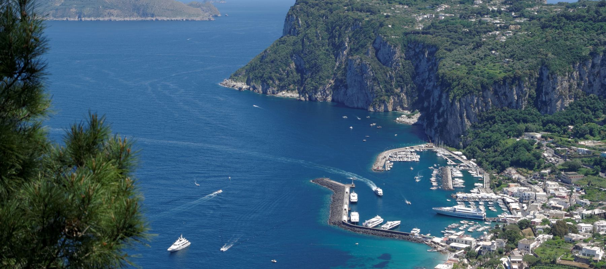

We can't wait to celebrate with you. Here is what we've found about getting there from Sioux Falls.

I
Flights
Fly into Naples or Rome, then continue to Capri. The prices below are the lowest round-trip fares recently seen from airports near Sioux Falls (FSD, MSP, ORD, OMA). They are a guide, not a quote, and the date shown is when that fare departs, which may not be wedding week. Use See live prices for your own dates.

II
From the airport to Capri
From Naples airport (NAP)
- Airport to the port. The Alibus costs about €5 and the ride is short. A taxi to Molo Beverello is a fixed fare, roughly €24 to €28, so ask for the fixed fare before you get in. Alilauro also runs an airport shuttle for about €10 with a ferry ticket (April to October, book ahead).
- Port to Capri. Fast ferries and hydrofoils leave from Molo Beverello and take about 50 minutes, roughly €22 to €31 one way. A slower Caremar ferry leaves from nearby Calata Porta di Massa, takes about 85 minutes, and costs roughly €14 to €19.
- Marina Grande to Capri town. Boats arrive at Marina Grande. The funicular up to town takes about 4 minutes and costs about €2.40 at the ticket office (€2.90 on board).
From Rome airport (FCO)
- Airport to Roma Termini. The Leonardo Express runs about every 15 minutes, takes 32 minutes, and costs €14.
- Rome to Naples. High-speed trains (Frecciarossa or Italo) take roughly 1 hour 10 minutes to 1 hour 30 minutes. Advance fares start around €9 and rise closer to the day, so book ahead.
- Naples to Capri. Take a taxi or local transport from Napoli Centrale to the port, then follow the Naples steps above.
III
Good to know
- Fares for next September are opening now, so it's a good time to start watching prices.
- Plan to arrive a day early so a delayed flight doesn't cost you the ceremony.
- Allow about 90 minutes between landing in Naples and your boat.
- Ferry timetables for 2027 aren't published yet. Check the schedule about a week before you travel.